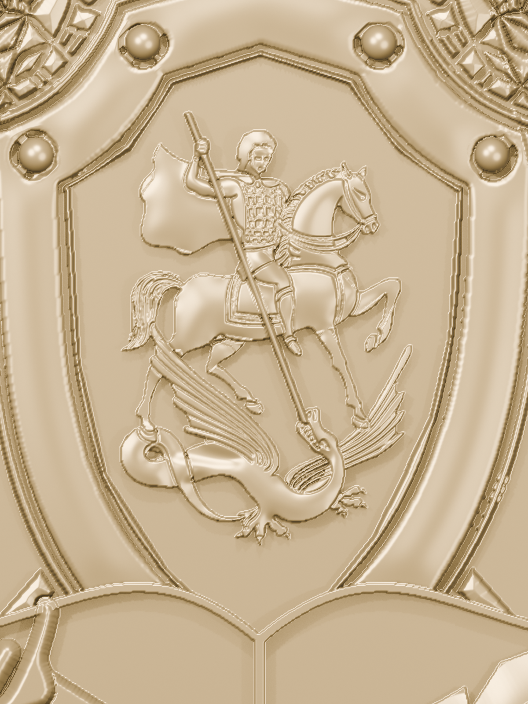
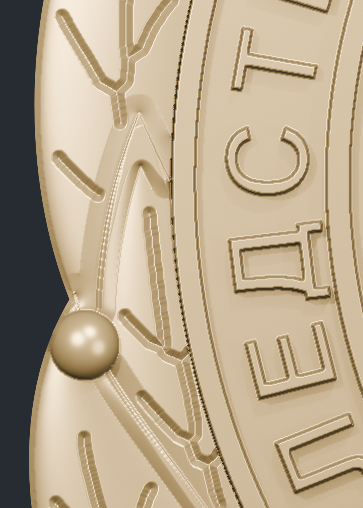
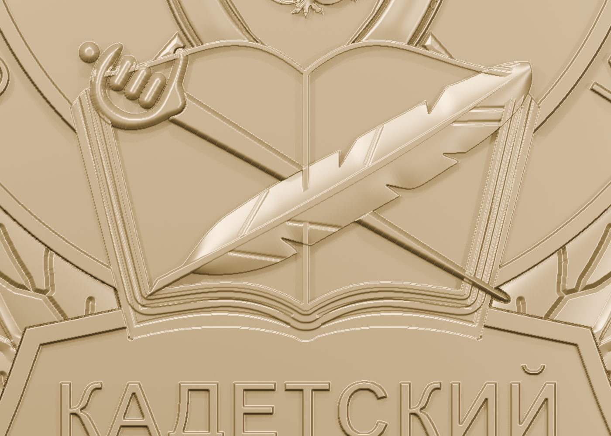
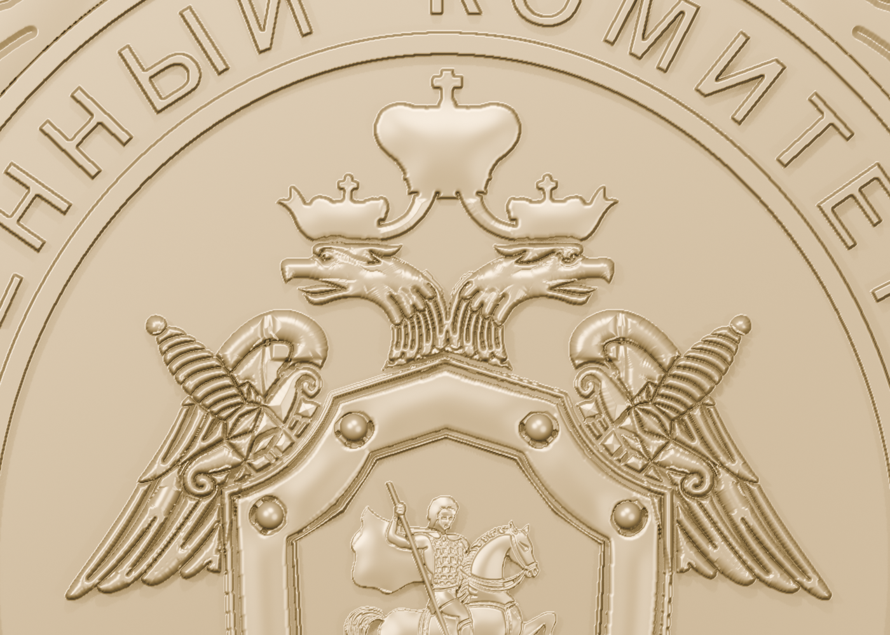
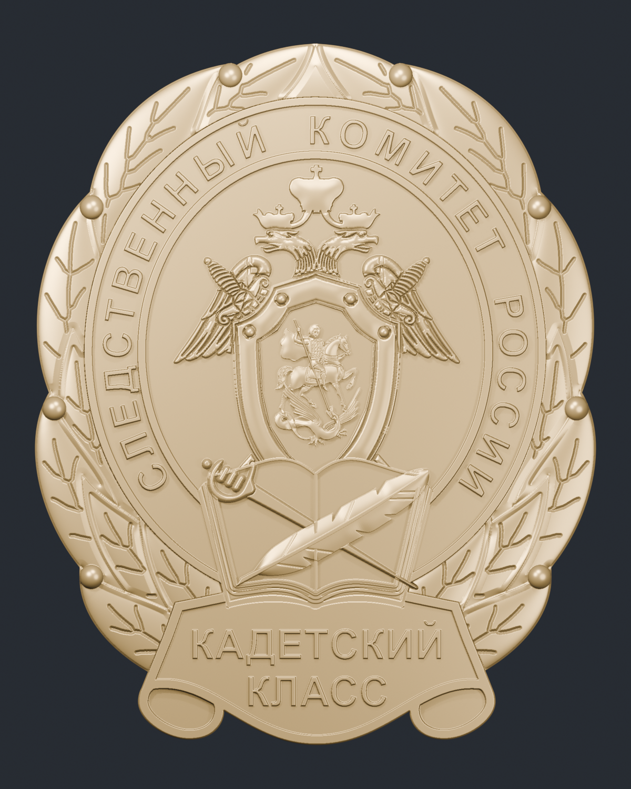
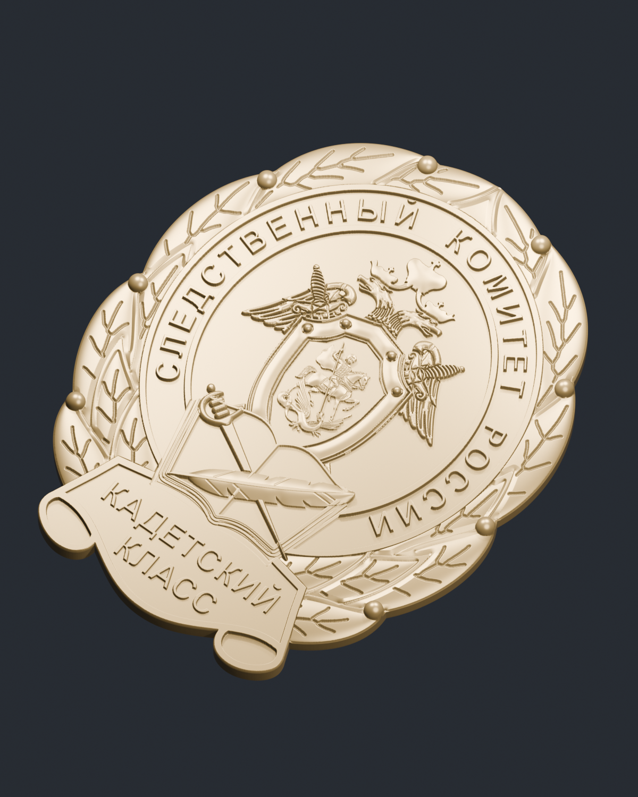
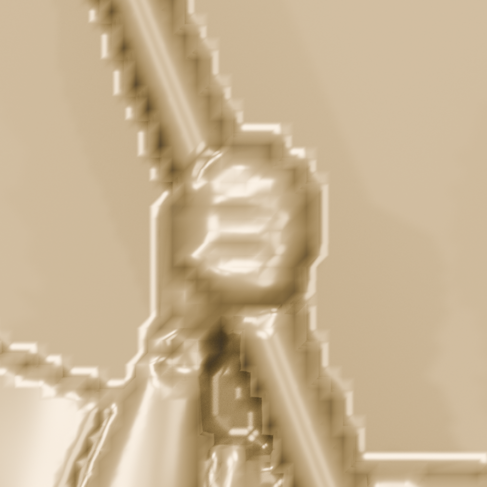
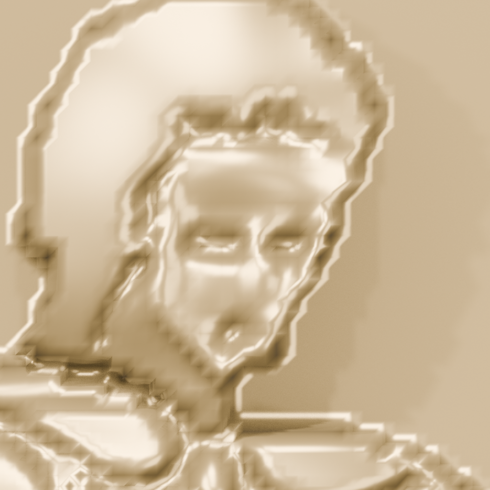
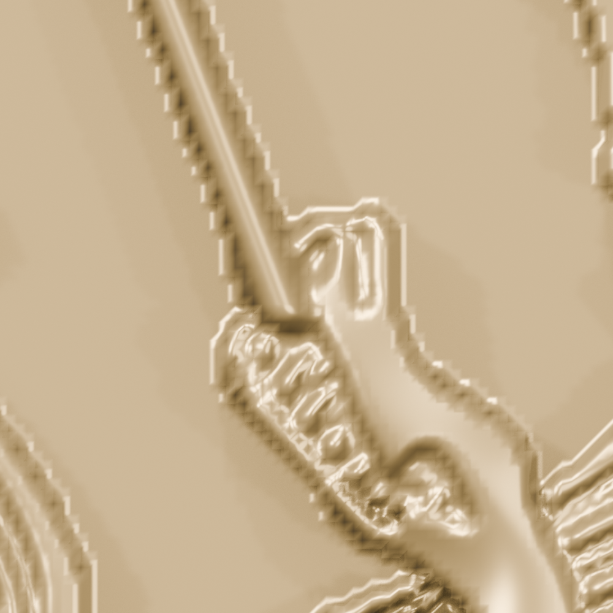

Всадник, орлы и мечи. Листья без бортиков, с углублёнными прожилками. Оливки на поверхности листьев. Страницы книги, перо и пересечения.
Нажми на изображение для увеличения. В открывшемся окне работают кнопки + и −, а также колесо мыши.








